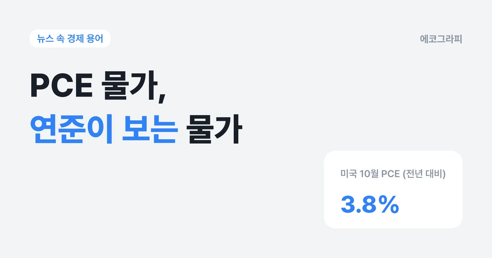
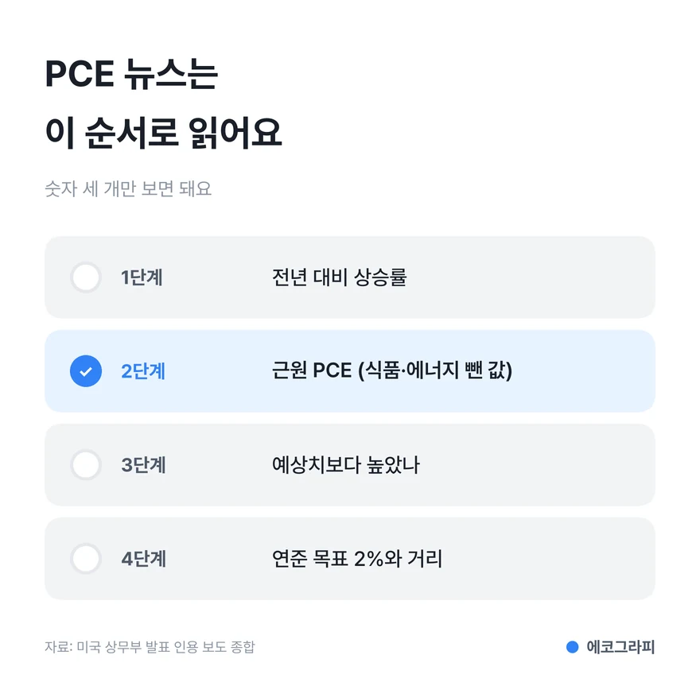
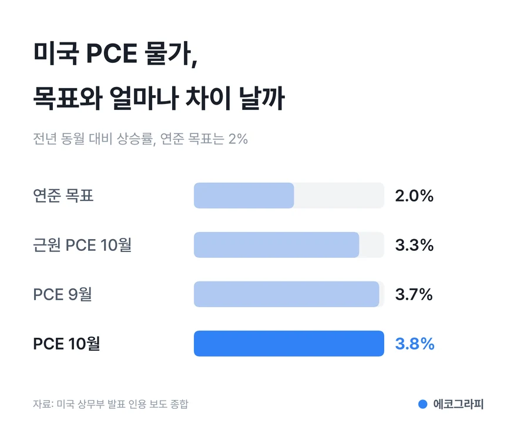
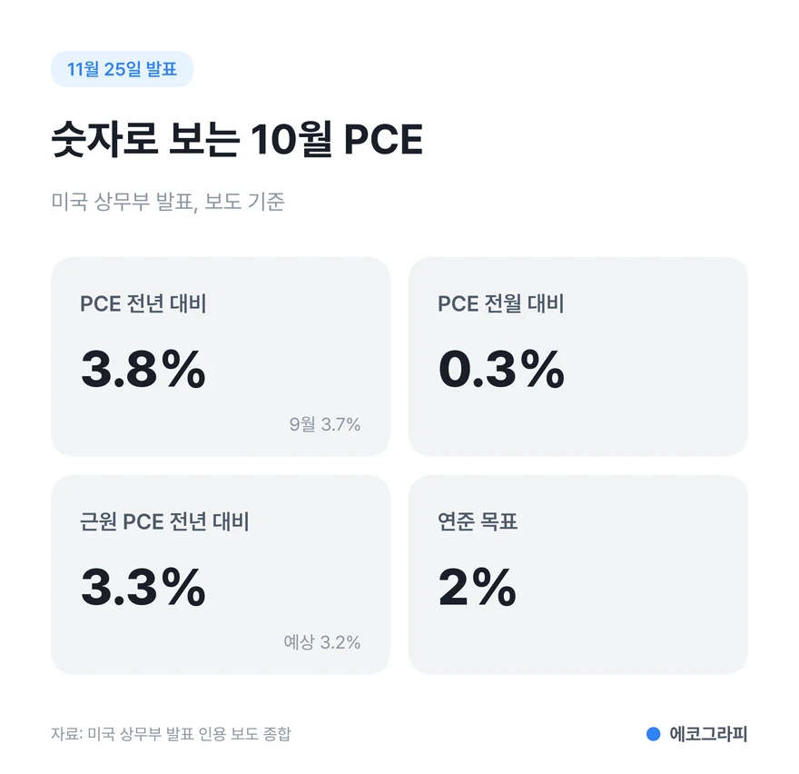
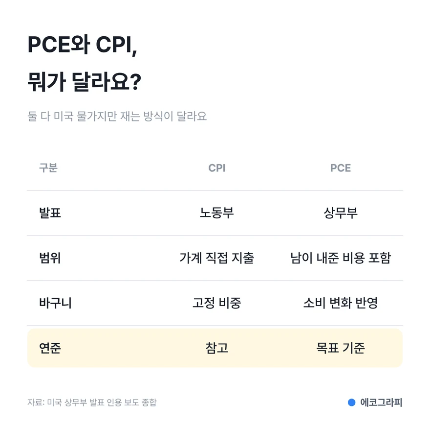

간밤 뉴욕 증시 기사마다 "10월 PCE 물가지수가 예상을 웃돌아 연준의 금리 인상 전망이 힘을 얻었다"는 문장이 붙었어요. 장 초반 나스닥이 4% 넘게 빠진 데에는 AI 걱정과 함께 이 물가 숫자도 한몫했어요. 어제 시장 흐름은 오늘 아침 시황에 정리했어요.
PCE(Personal Consumption Expenditures) 물가: 미국 가계가 사는 물건과 서비스 전체의 가격이 1년 전보다 얼마나 올랐는지 보여 주는 지표예요. 미국 상무부가 매달 발표해요.
'근원 PCE'라는 말도 자주 같이 나와요. 날씨나 국제 유가 때문에 크게 출렁이는 식품·에너지 가격을 뺀 값이에요. 일시적인 흔들림을 걷어 내고 물가의 큰 흐름을 보려고 써요. 근원물가 개념은 CPI에서 쓰는 것과 같아요.

연준은 "PCE 기준으로 물가 상승률 2%"를 목표로 삼아요. 그래서 PCE가 2%에서 멀어질수록 금리를 올리거나 높게 유지할 이유가 커지고, 2%에 가까워지면 금리를 내릴 여지가 생겨요.


목표인 2%와 비교하면 아직 두 배 가까이 높아요. 게다가 방향도 내려오는 게 아니라 다시 올라가는 중이라, 시장은 연준이 12월에 금리를 올리고 내년 초에도 한 번 더 올릴 수 있다고 보고 있어요. 시장이 금리 확률을 어떻게 계산하는지는 페드워치 글에 있어요.
확인할 것: PCE 뉴스가 나오면 근원 PCE가 예상보다 높았는지 낮았는지부터 보세요. 시장은 '숫자 자체'보다 '예상과의 차이'에 더 크게 반응해요.

CPI(소비자물가지수)는 노동부가 발표하고, 가계가 직접 돈을 내는 물건값을 정해진 바구니로 재요. PCE는 범위가 더 넓어서, 예를 들어 회사나 보험이 대신 내 주는 의료비 같은 것까지 담아요. 또 사람들이 비싼 물건 대신 싼 물건으로 갈아타는 변화도 반영해요. 그래서 보통 PCE가 CPI보다 조금 낮게 나와요. CPI는 PCE보다 2주쯤 먼저 나와서 '예고편', PCE는 연준이 실제로 보는 '본편'이라고 생각하면 쉬워요.
아니에요. 연준은 고용·성장 같은 다른 지표도 함께 봐요. 다만 PCE는 목표의 기준이라 무게가 커서, 높게 나오면 인상 쪽 근거가 강해져요.
보통 매달 말쯤 미국 상무부가 전달 숫자를 발표해요. 한국 시간으론 밤 10시 30분 무렵(서머타임이 아닐 때)이에요.
한국은행은 소비자물가지수(CPI)를 기준으로 물가 목표 2%를 정해요. 그래서 한국 뉴스에선 CPI가 더 자주 나와요.
큰 흐름은 전년 대비, 최근 속도는 전월 대비로 봐요. 전월 대비 0.3%가 1년 내내 이어지면 연간으로는 3%대 중반이 돼요.
※ 2026년 11월 기준으로 정리한 글입니다. 세율·제도는 바뀔 수 있으니 거래 전 증권사·국세청 안내를 한 번 더 확인하세요. 특정 종목·상품의 매수·매도 권유가 아닙니다.